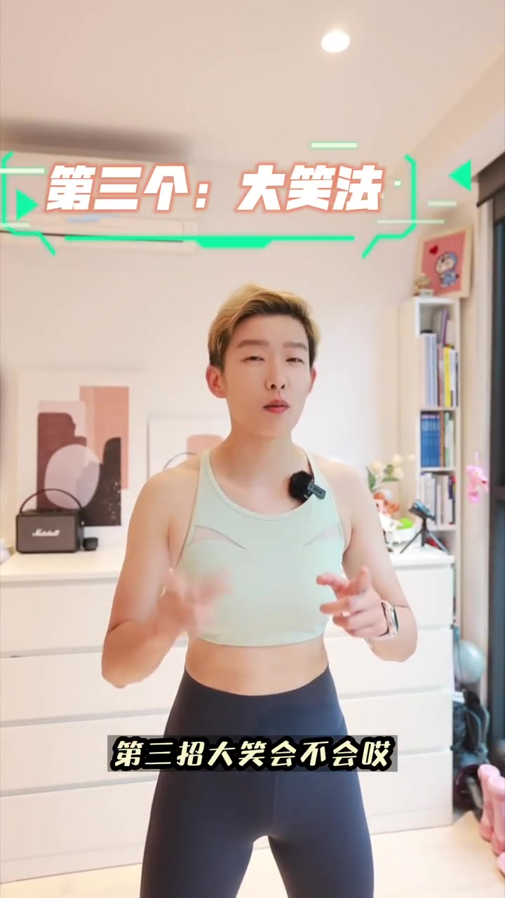
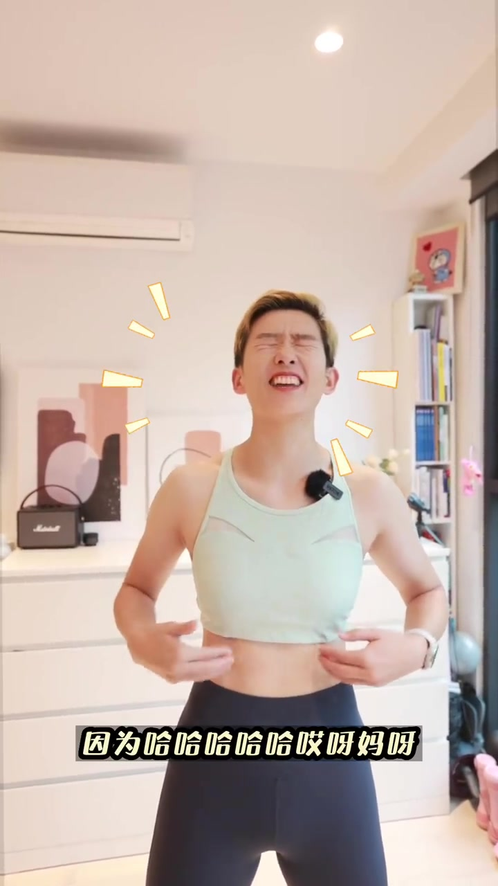

开场 · 00:00
开场提问：收紧核心是不是吸肚子？
视频一开场，UP 主就说很多「宝子」私信问他如何收紧核心，是不是就是把肚子吸进去。他用「来来来」引出正题，承诺「分分钟教会你如何正确收紧核心」「三秒就学会」，并提醒观众先点赞收藏，「不然下次要用的时候找不到喽」。
Whisper 在这一句把「吸肚子」识别成了「踢肚子」，属于语音识别误差；结合视频标题与后文 00:36 处清晰的「吸肚子它是吸气」，可确认原意是「吸肚子」。完整转录部分保留 Whisper 原始识别结果，不做人工改写。

科普 · 00:13
先搞懂核心机群，不只是肚子
UP 主说要先「诊明」（阐明）一下什么是核心机群，因为很多宝子以为肚子就是核心的全部。他用「no no no no」和一张表情包直接否定这个误解：核心机群其实包括腹部、背部以及骨盆三大块，肚子只是其中一部分。
他接着解释，这些核心机群一起收紧之后，身体就会「如铜墙铁壁」，在运动时能保护身体、避免受伤，并且保持一个好的体型体态。

对比演示 · 00:33
核心收紧 ≠ 吸肚子：一软一硬的区别
UP 主说，想学会收紧核心，得先搞清楚「核心收紧」和「吸肚子」的区别。吸肚子是吸气，肚子表面看起来瘪下去了，但用手一摸，「它全是软的」。
而核心收紧不一样：他用手在腹部比划「一锤一圈」，说这时候摸起来是可以抵挡住外力按压的。这就是为什么运动时要收紧核心——腹部、背部、骨盆这些机群一起发力，才能保护脊柱、腰椎以及其他关节，避免运动中受伤。


技巧一 · 01:08
技巧一：模拟「上大号」的发力
铺垫完理论后，UP 主说今天用几个生活中的小技巧，教大家如何收紧核心。画面叠上字幕「第一个：💩法」，他现场模拟排便时的用力过程：「已经在拉屎，有点干，还有点干，出来，往外，站住」，让身体自然进入短暂的用力绷紧状态。
这是 UP 主用来帮助观众「找到收紧感」的生活化类比，不是真的建议在排便时用力健身；短暂模拟即可，不宜长时间憋气用力。

技巧二 · 01:18
技巧二：像吹生日蜡烛一样用力呼气
第二个技巧，UP 主手里拿着一支真实的蜡烛，说「过生日的时候咱们都得吹蜡烛，对不对，感受一下」，通过用力呼气的动作，再一次让核心机群收紧，「又收紧了」。

技巧三 · 01:25
技巧三：开怀大笑测试
第三招是「大笑法」。UP 主叠字幕「第三个：大笑法」，说「会不会，感受一下，因为……」话音未落就开怀大笑起来，一边笑一边摸着自己的腹部惊呼「哎呀，好紧了，特别紧，特别紧」，最后总结「这个招真有用，所以笑出腹肌那是真的」。


结尾 · 01:38
结尾互动：学会了吗，评论区告诉我
视频结尾，UP 主问观众「你学会了吗，评论区留言告诉我」，并预告下期视频会教大家「如何在运动中一直能够收紧核心」。
1分45秒看完记住什么
核心不等于肚子，而是腹部、背部、骨盆一起发力的机群；判断收紧与否，别只看肚子瘪没瘪，用手按一按——软的是吸肚子，能顶住按压的才是真收紧。找不到收紧感时，可以试试模拟排便用力、用力吹气、开怀大笑这三个生活化小动作，快速唤醒核心的收紧反射。